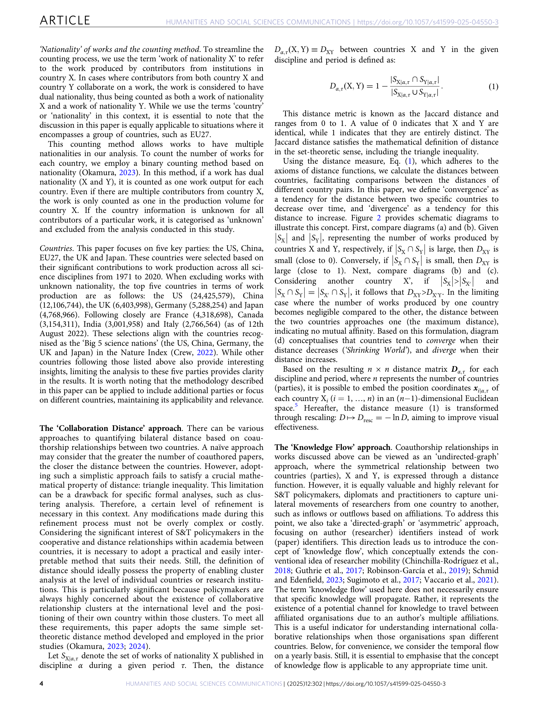
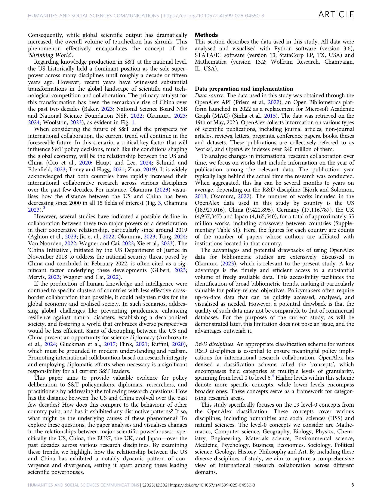
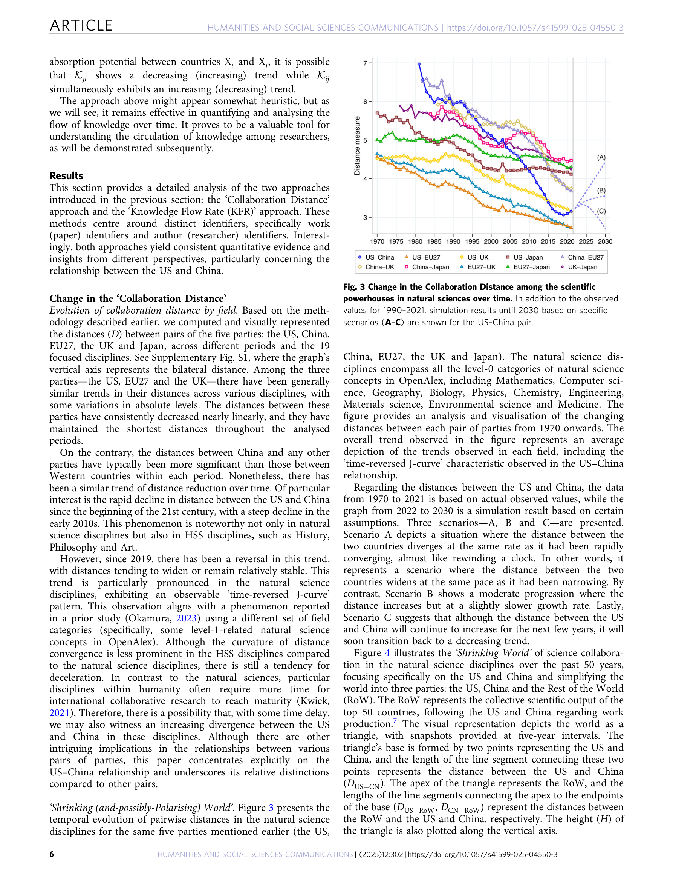
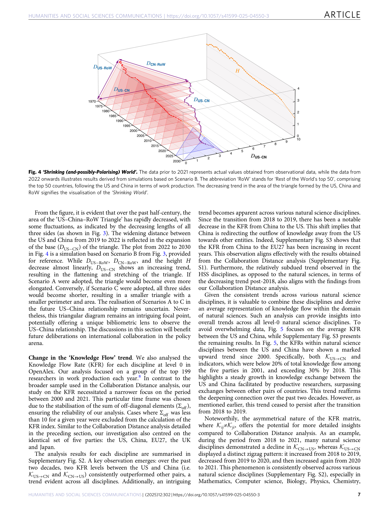

Figure 1
저자: Kensei Kitajima, Keisuke Okamura | 날짜: 2025-03-03 | Journal: Humanities and Social Sciences Communications | DOI: 10.1057/s41599-025-04550-3
Figure 1
미-중 과학 협력의 거리는 지난 수십 년간 어떻게 변화했는가? OpenAlex 데이터를 활용한 분석 결과, 미-중 협력은 2000년대부터 급속한 수렴(convergence) 단계를 거쳤으나, 약 2019년을 기점으로 발산(divergence) 단계에 진입했다. 이 역전은 다른 국가 쌍(미-EU, 미-일 등)에서는 관찰되지 않는 미-중 고유의 현상이며, 논문 식별자 기반과 연구자 식별자 기반 두 가지 접근 모두에서 확인되었다. 이는 글로벌 과학 협력의 "축소하는 세계(Shrinking World)" 추세에 대한 예외적 사례다.

Figure 2
과학기술 분야의 국제 협력은 지난 수십 년간 전반적으로 심화되어 왔으며, 미국과 중국은 글로벌 과학 지식 생산의 양대 축으로 부상했다. 그러나 2019년경부터 양국 협력의 감소 징후가 보고되기 시작했다(China Initiative 등). 이 변화가 분야별·시기별로 어떻게 전개되었는지에 대한 포괄적 정량적 증거가 부족하여, 과학 외교와 정책 결정의 근거가 필요했다.

Figure 3

Figure 4

Figure 5
총평: 미-중 과학 협력의 수렴-발산 전환을 다차원적으로 실증한 시의적절한 연구로, 과학 외교와 국제 연구정책 논의에 중요한 근거를 제공한다.